Associate Professor and PhD supervisor(博士生导师), College of Computer Science, Sichuan University
Associate Dean (on aid mission), School of Information Science and Technology, Tibet University
I received my dual Ph.D. degrees from University of Electronic Science and Technology of China (UESTC) and University of Chinese Academy of Sciences (UCAS) in 2014. My research focuses on medical image analysis, multi-modal learning, computer vision, 3D imaging, and HDR imaging. Currently, I am serving an aid mission to Tibet University as Associate Dean(西藏大学信息科学与技术学院副院长（挂职）), while keeping my affiliation with Sichuan University.
Office: Wangjiang Campus West District Science and Technology Innovation Center 314, Sichuan University
Email: zjp16@scu.edu.cn
招生：课题组每年招5-7名硕士/博士。研究方向：医学图像分析、多模态学习、计算机视觉、3D成像、HDR成像。欢迎邮件联系!
2026年9月入学：报考304（计算机学院）或604（图像所）的同学请联系我! 同样欢迎计划2027年9月入学的保研同学联系我!
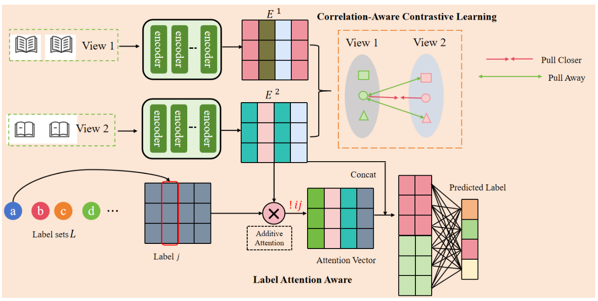
Zhengzhong Zhu, Pei Zhou, Zeting Li, Kejiang Chen, Jiangping Zhu*
IJCAI 2025, [Paper]
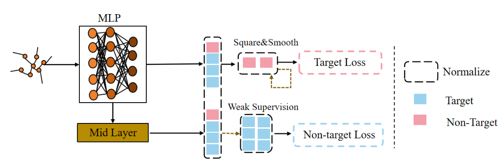
Zhengzhong Zhu, Pei Zhou, Renyuan Liu, Jiangping Zhu*
Neural Networks, 2025, [Paper]
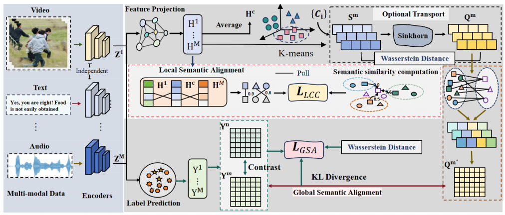
Zhengzhong Zhu, Pei Zhou, Weihong Du, Shiquan Min, Jiangping Zhu*
AAAI 2026, [Paper]
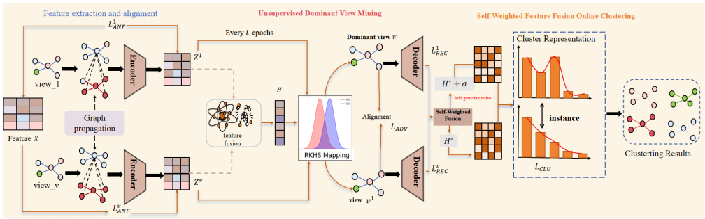
Zhengzhong Zhu, Pei Zhou, Dongsheng Wang, Li Cheng, Jiangping Zhu*
AAAI 2026, [Paper]
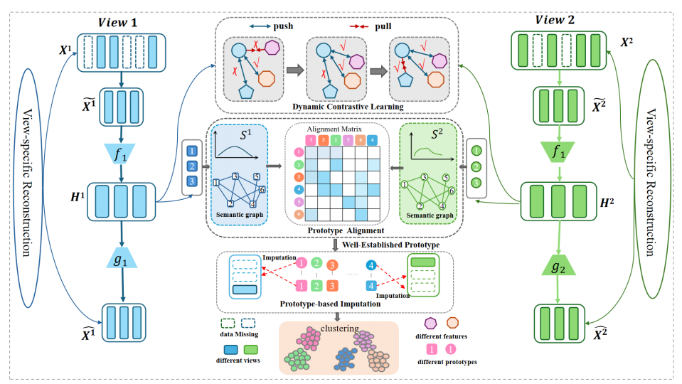
CVPR 2026
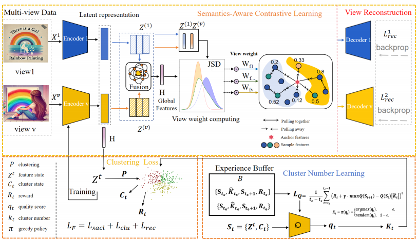
CVPR 2026
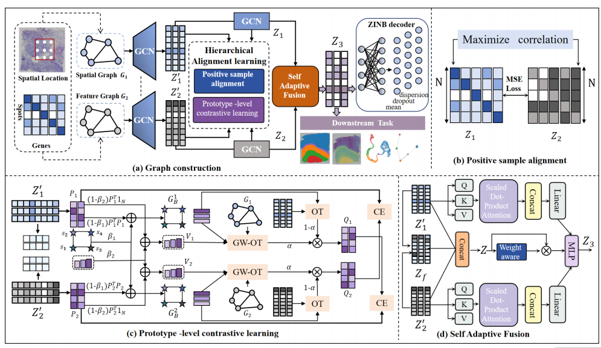
CVPR 2026
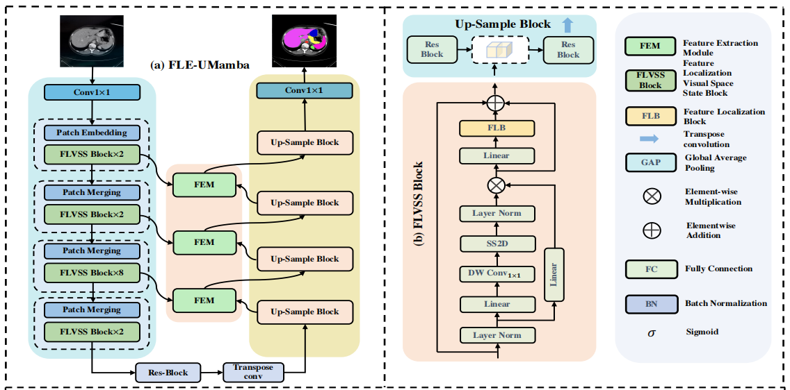
Shiquan Min, Yiran Peng*, Jiangping Zhu*, Pei Zhou, Fangji Gan, Zhengzhong Zhu
ICASSP 2026
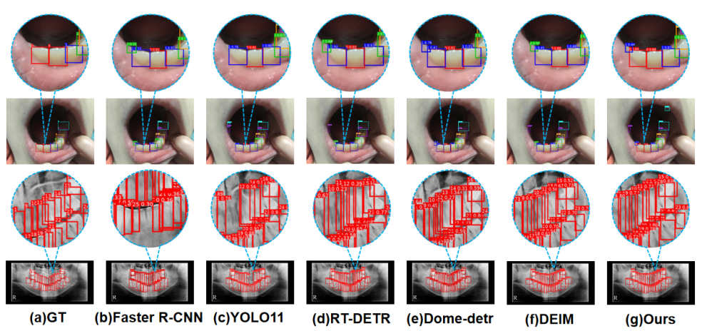
Chen Zhang, Ruijie Huang*, Jiangping Zhu*, Shiquan Min, Pei Zhou, Zhongjian Wang
IJCNN 2026
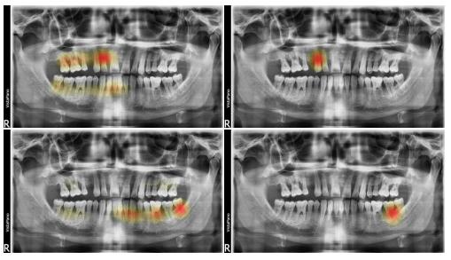
Xi Wu, Ruijie Huang*, Jiangping Zhu*, Shiquan Min, Pei Zhou, Zhongjian Wang
IJCNN 2026
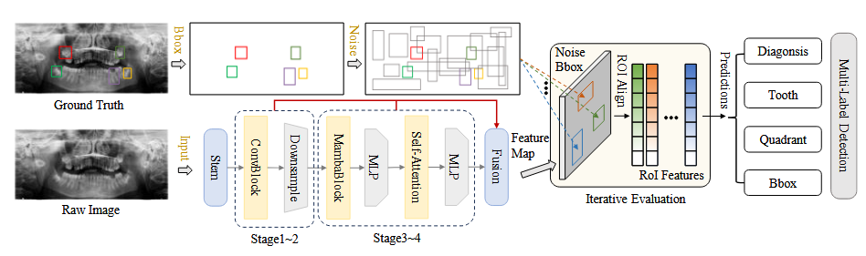
Yanfu Li, Ruijie Huang, Pei Zhou, Zhengzhong Zhu, Jiangping Zhu*
ICIC 2025, [Paper]
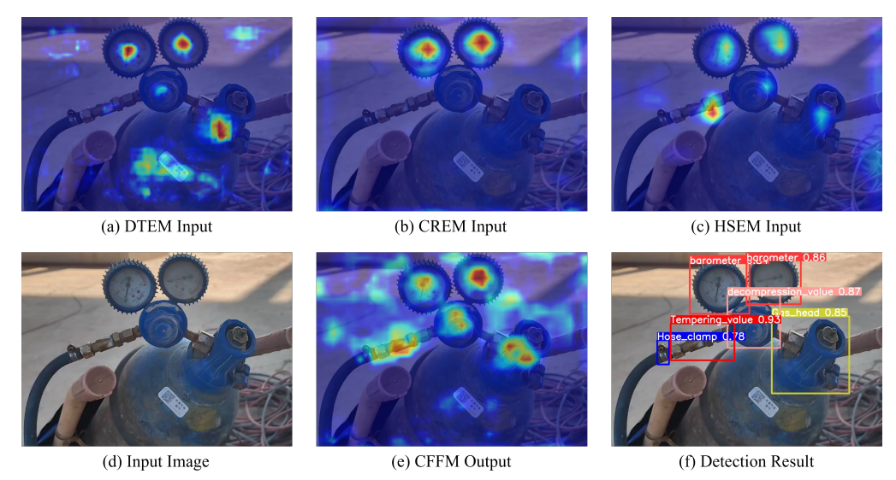
Yifan Li, Pei Zhou, Junlin Du, Jiangping Zhu*
IJCNN 2025, [Paper]
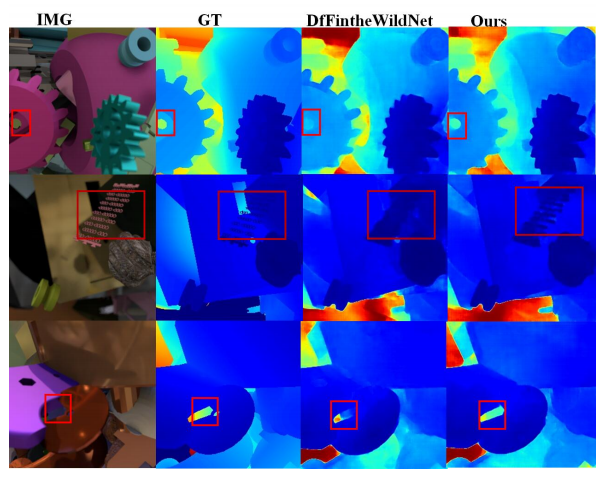
Siwei Yan, Jiangping Zhu*, Pei Zhou, Junlin Du
IJCNN 2025, [Paper]
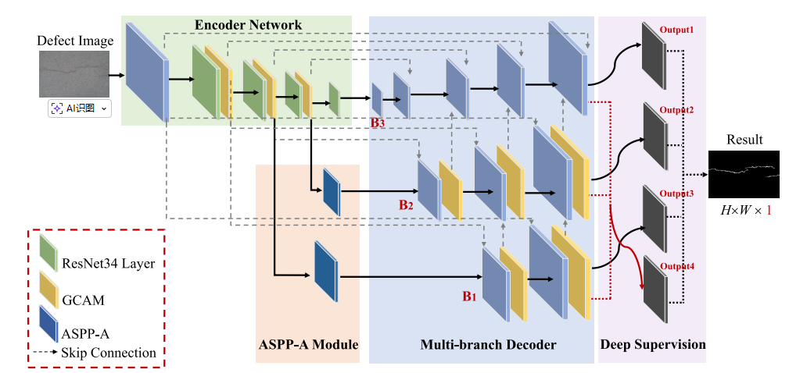
Jiangping Zhu, Guohuan He, Pei Zhou
IEEE Trans. Instrum. Meas., Vol. 72, pp. 1-11, 2023 （中科院二区SCI）, [Paper]
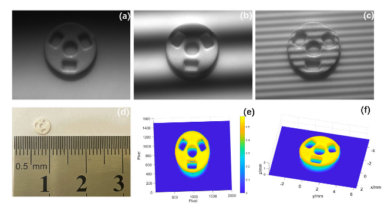
Jiangping Zhu, Xiaopeng Luo, Zhoumiao He, Guigang Yin, Pei Zhou
IEEE Trans. Instrum. Meas., Vol. 74, pp. 1-10, 2025 （中科院二区SCI）, [Paper]
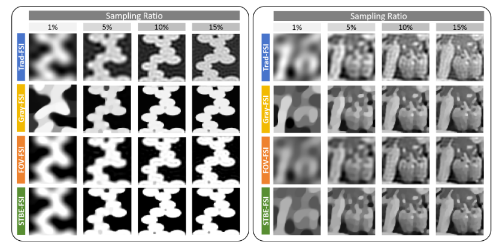
Jiangping Zhu, Yi Shuai, Lei Liu, Guigang Yin, Pei Zhou
Opt. Express, Vol. 33, No. 10, pp. 20767-20784, 2025 （中科院二区SCI）, [Paper]
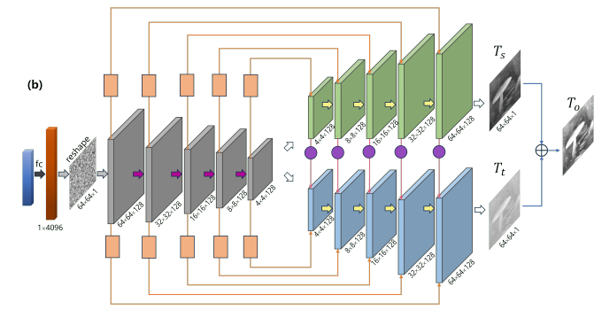
Zhengmin Guo, Pei Zhou, Jiangping Zhu
Opt. Express, Vol. 32, No. 17, pp. 30787, 2024 （中科院二区SCI）, [Paper]
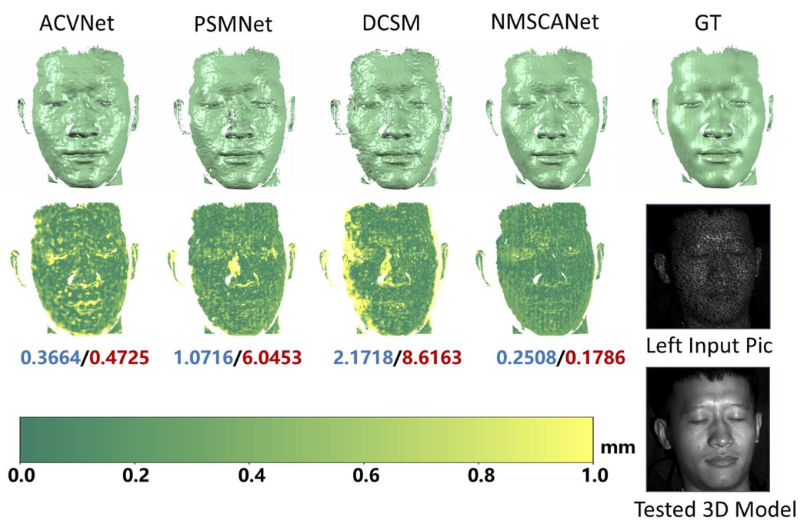
Genshen Li, Pei Zhou, Junlin Du, Jianwei Zhang, Jiangping Zhu
Opt. Express, Vol. 32, No. 4, pp. 4778-4798, 2024 （中科院二区SCI）, [Paper]
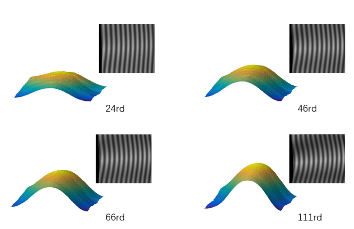
Jiangping Zhu, Jun Luo, Guigang Yin, Pei Zhou
IEEE Trans. Instrum. Meas., Vol. 73, pp. 1-11, 2024 （中科院二区SCI）, [Paper]
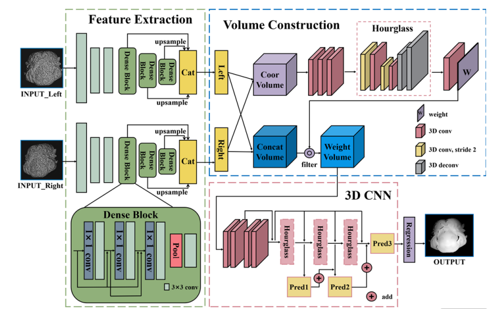
Ruike Wang, Pei Zhou, Jiangping Zhu
Opt. Express, Vol. 31, No. 9, pp. 14048-14067, 2023 （中科院二区SCI）, [Paper]
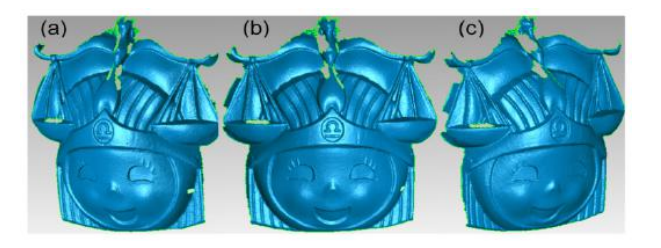
Jiangping Zhu, Pei Zhou, Xianyu Su, Zhisheng You
Opt. Express, Vol. 24, No. 25, pp. 28549-28560, 2016 （中科院二区SCI）, [Paper]
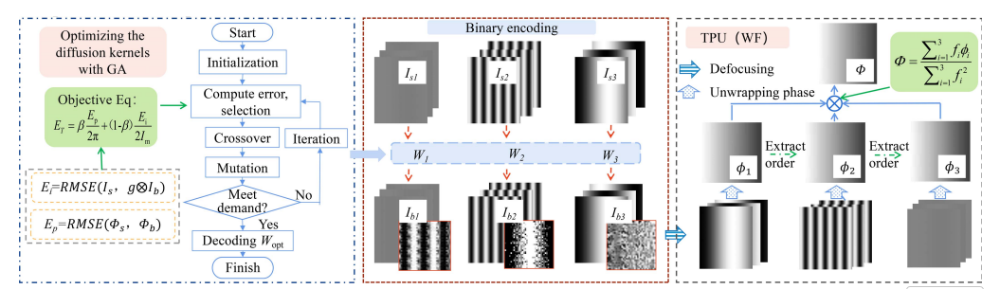
Jiangping Zhu, Changhui Zhu, Pei Zhou, Zhoumiao He, Di You
IEEE Trans. Instrum. Meas., Vol. 71, pp. 1-8, 2022 （中科院二区SCI）, [Paper]
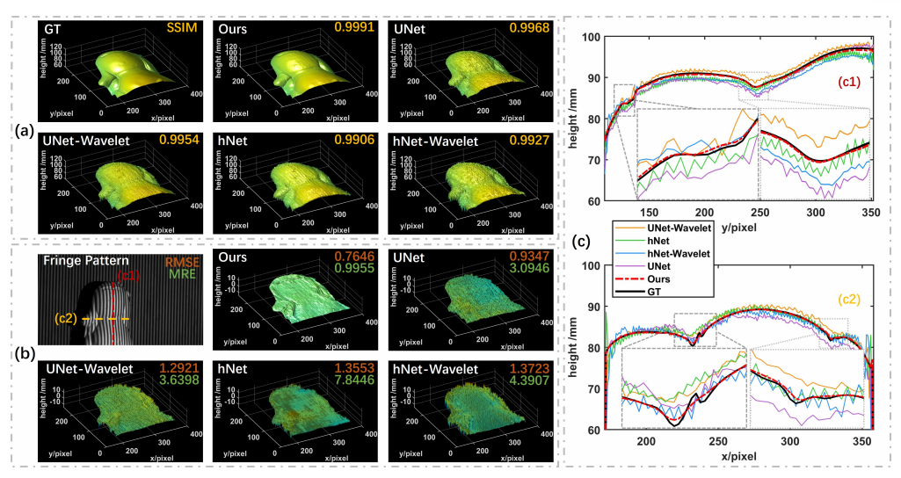
Chao Wang, Pei Zhou, Jiangping Zhu
Opt. Express, Vol. 31, No. 20, pp. 33287-33298, 2023 （中科院二区SCI）, [Paper]
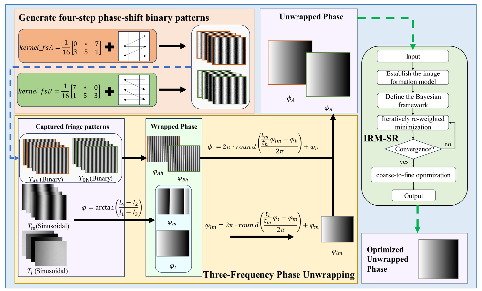
Yuqi Yang, Jiangping Zhu, Jun Luo, Fan Yang, Pei Zhou
Appl. Opt., Vol. 64, No. 10, pp. 2339-2350, 2025, [Paper]
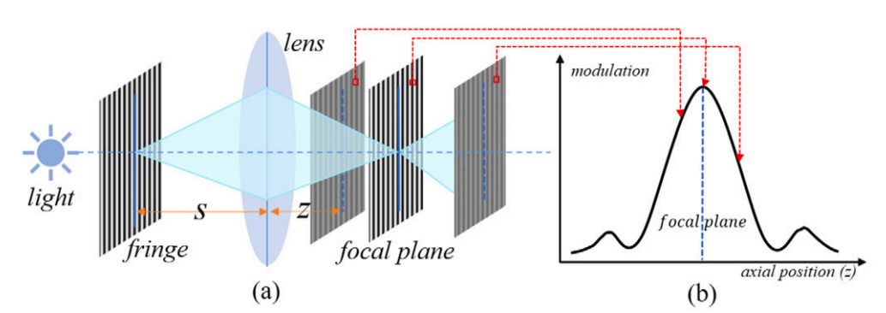
Zhoumiao He, Pei Zhou, Jianwei Zhang, Jiangping Zhu
Opt. Lasers Eng., Vol. 180, pp. 108297, 2024, [Paper]
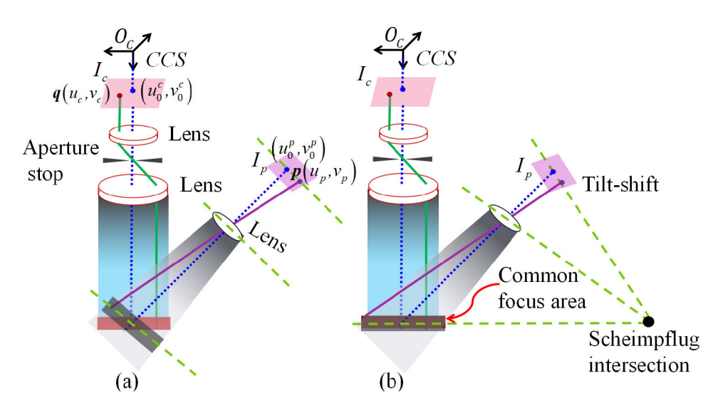
Shiyong An, Pei Zhou, Jiangping Zhu, Hongyu Yang
IEEE Trans. Instrum. Meas., Vol. 73, pp. 1-12, 2024 （中科院二区SCI）, [Paper]
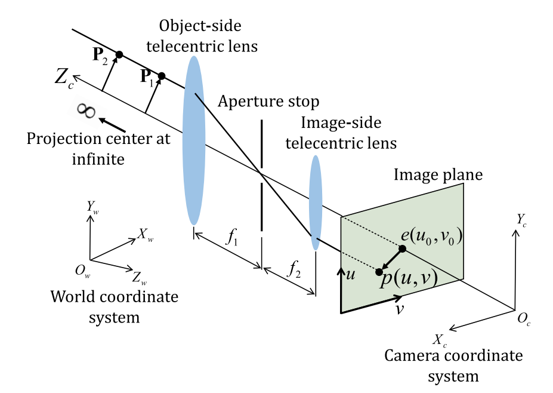
Wenfan Xiao, Pei Zhou, Shiyong An, Jiangping Zhu
Appl. Opt., Vol. 61, No. 1, pp. 157-166, 2022, [Paper]
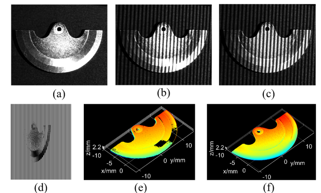
Jialing Hu, Jiangping Zhu, Pei Zhou
Appl. Opt., Vol. 61, No. 30, pp. 9028-9036, 2022, [Paper]
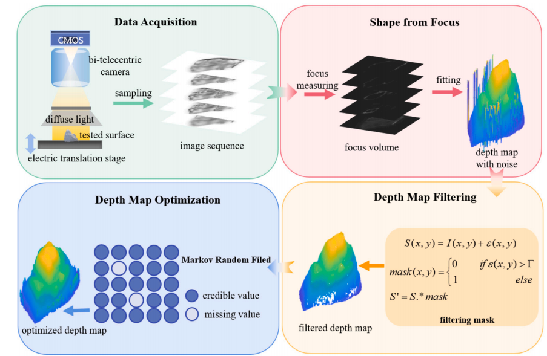
Zhoumiao He, Pei Zhou, Jiangping Zhu, Jianwei Zhang
Opt. Lasers Eng., Vol. 170, pp. 107784, 2023, [Paper]
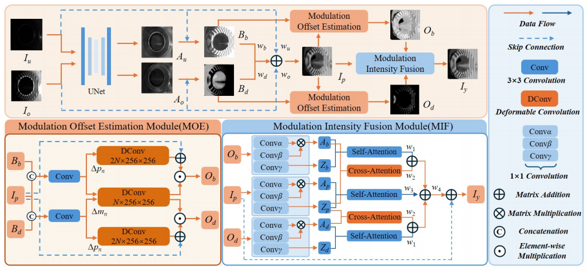
IJCNN 2026
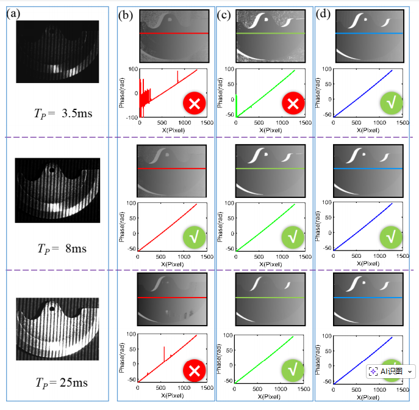
Jiangping Zhu, Fan Yang, Jialing Hu, Pei Zhou
Opt. Express, Vol. 31, No. 15, pp. 25318-25338, 2023 （中科院二区SCI）, [Paper]
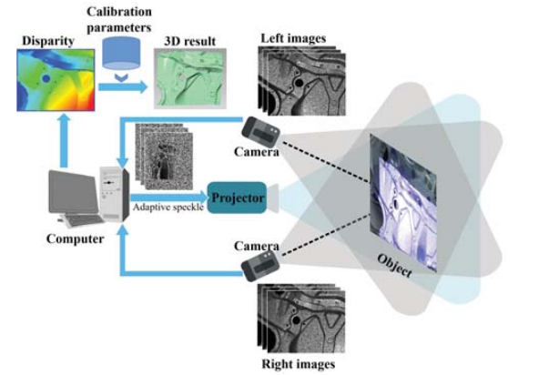
Pei Zhou, Yue Cheng, Jiangping Zhu, Jialing Hu
IEEE Trans. Instrum. Meas., Vol. 72, pp. 1-12, 2023 （中科院二区SCI）, [Paper]